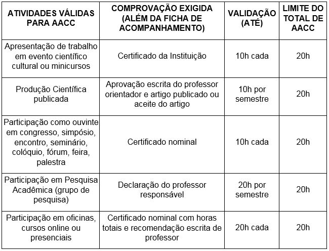
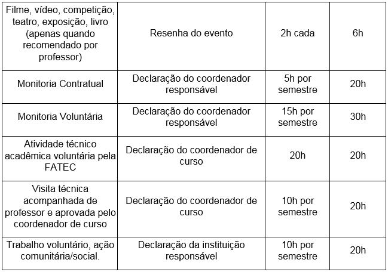

O que é AACC
O que são Atividades Acadêmico-Científico-Culturais (AACC)?
As AACC são atividades que têm por finalidade complementar a formação do
discente e ampliar o seu conhecimento teórico e prático com atividades
extraclasse.
Que tipos de atividades são consideradas AACC?


Observação: as atividades validadas como Acadêmico-Científico-Culturais
não poderão ser utilizadas para validação das atividades de Trabalho de
Formatura e vice-versa.
Qual o número total de horas?
O aluno deverá cumprir 40 horas de AACC durante a realização do curso. O
não cumprimento implica retenção no curso até a totalização das horas
exigidas.
Quem deve cumprir as horas de AACC?
Discentes que ingressaram a partir do 1º semestre de 2010:
Curso Superior de Tecnologia em Gestão Empresarial;
Curso Superior de Tecnologia em Gestão Empresarial(EaD);
Curso Superior de Tecnologia em Redes;
Curso Superior de Tecnologia em Gestão de Serviços.
Como proceder para registrar as horas cumpridas?
Efetue o download da Ficha AACC;
Preencha o documento em duas vias;
Obtenha a assinatura do professor ou coordenador;
Entregue uma via ao responsável pelo controle de AACC juntamente com o
documento que evidencie sua execução e guarde a segunda via para seu
próprio controle.